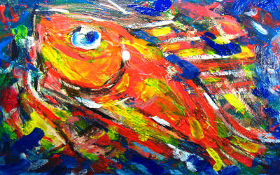
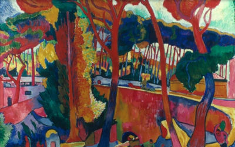
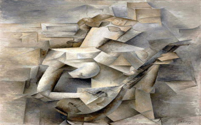
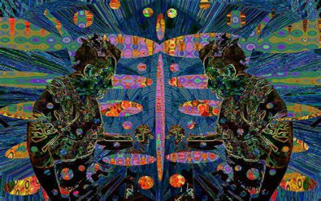
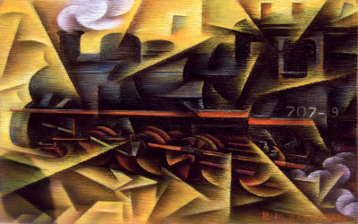
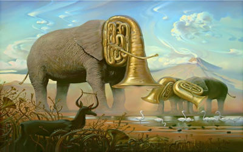

Arte Moderna
A Arte Moderna é o conjunto de expressões artísticas que surgiu na Europa no final do século XIX e perdurou até meados do século XX
A arte moderna tem como principal característica o rompimento com os padrões vigentes. Tal aspecto se dá principalmente por conta de seu momento histórico.
Aconteceu em um período de grandes conquistas tecnológicas (como o invento da fotografia e do cinema), além da Revolução Industrial, a Primeira Guerra Mundial e posteriormente a Segunda Guerra Mundial.
Assim, a arte também se transforma e passa a exercer cada vez mais um papel contestador, expressando de alguma forma as incertezas e dilemas da contemporaneidade.
Essa expressão artística transformou radicalmente o campo das artes ao quebrar com os formalismos, atingindo inclusive as estruturas gramaticais no campo literário.
Suas principais características são:
- Rejeição ao academicismo
- Informalidade
- Liberdade de expressão
- Pontuação relativa
- Aproximação da linguagem popular e coloquial
- Figuras deformadas e cenas sem lógica
- Abandono da representação das formas de maneira realista
- Arbitrariedade no uso das cores
- Urbanismo
- Humor, irreverência
- Estranhamento
Principais Movimentos da Arte Moderna
Expressionismo
Esse movimento artístico está entre os primeiros representantes das vanguardas históricas e talvez, o primeiro a focar em aspectos subjetivos.
A corrente acontece em contraposição ao movimento impressionista, que se ocupava mais dos efeitos das luzes e cores.
Já no expressionismo, a principal característica é a representação dos sentimentos e das emoções, procurando expressar as angústias e o universo psicológico da sociedade no início do século XX.
Fauvismo
As principais características do movimento fauvista são o uso das cores puras e a simplificação das formas.
Os artistas criavam figuras apenas sugerindo as formas, sem representá-las de maneira realista e usavam as tintas sem misturá-las e criar degradês.
Essa corrente levou o nome de "fauvista" depois de uma exposição realizada em Paris, em 1905. Os pintores foram chamados pela crítica de fauves, que em português quer dizer "feras". Tal denominação veio por conta do uso intenso e arbitrário das cores.
Cubismo
O cubismo pode ser considerado o primeiro movimento artístico a se caracterizar pela incorporação do imaginário urbano industrial em suas obras.
Caracterizava-se, especialmente, pela geometrização das formas, modeladas basicamente por cubos e cilindros.
Os cubistas também procuravam retratar os objetos e pessoas em todos os seus ângulos, como se esses estivem "abertos". Dessa forma, abandonam a noção de perspectiva e terceira dimensão, tão buscada pelos pintores do renascimento.
Abstracionismo
Na arte abstrata, o que se destaca é a ausência de relação direta entre as formas retratadas com as formas realistas de um ser ou objeto.
Aqui, os artistas exploram as cores, formas, linhas, texturas, contrastes e outros elementos não pictóricos.
Pode-se considerar o artista russo Wassily Kandinsky um dos precursores da pintura moderna abstrata.
Futurismo
O futurismo nas artes plásticas foi um desdobramento de tendências na literatura do início do século XX e teve bastante influência do Manifesto Futurista (1909), criado pelo escritor Filippo Tommaso Marinetti.
Caracterizava-se pela valorização do industrialismo, da aceleração e da tecnologia, que superavam a velocidade do movimento natural. Tal movimento relaciona-se com a revolução industrial que estava em curso.
Surrealismo e Dadaísmo
Essas vanguardas surgiram como reação ao racionalismo e materialismo da sociedade ocidental e também como crítica à Primeira Guerra Mundial (1914-1918).
No caso do Dadaísmo, a escolha do nome foi feita através da abertura aleatória de um dicionário e a palavra que surgiu foi dadá, que em francês significa "cavalo" em linguagem infantil. A palavra pouco importava, pois em um mundo tomado pelo irracionalismo da guerra, a arte também "perdia o sentido".
A partir dessa linha artística, surgiu o Surrealismo, idealizado pelo escritor André Breton (1896-1966). Essa forma de arte valorizava a fantasia, a loucura, o universo onírico e o impulso dos artistas, dando vazão às manifestações do inconsciente humano.
Concretismo
O Concretismo foi um movimento de vanguarda que visava a criação de uma nova linguagem por meio de figuras geométricas. Os artistas dessa corrente buscavam causar no público sensações de movimento ao olhar para as obras.
Assim, na literatura tinha como característica central a valorização do conteúdo visual e sonoro. Já nas artes plásticas, destacou-se pelo uso de formas abstratas.